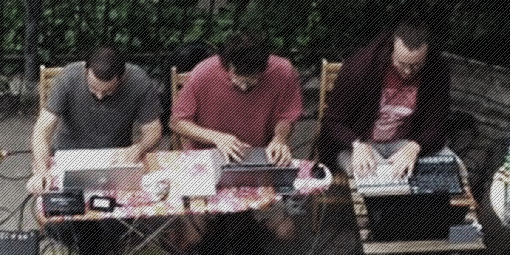

Orcæ est un trio de musique électronique s’adonnant à l’improvisation collective forcenée.
En somme donc, 3 individus aux yeux rivés sur leurs ordinateurs portables proposant des performances pouvant durer de 45 minutes à 1h30. Aucune consigne au départ ou à l’arrivée, aucun thème ou registre sonore imposé, aucun logiciel ou patch véritablement fixé, aucune synchronisation ou communication entre leurs machines, non, rien d’autre qu’une écoute partagée, concentrée sur l’instant et sur l’essence des sons produits dont il faut travailler l’amalgame. Orcæ aime varier les plaisirs et inclure d’autres contributeurs à ses performances (musicien•ne•s acoustiques ou éléctroniques, artistes visuels) et investit également les terrains de l’immersion sonore par multidiffusion.
Chacun des membres d’Orcæ a une culture musicale et des pratiques très différentes (heavy métal, jazz, reggae, chanson française, rock ou encore electro-dub), mais tous trois partagent une expérience commune de chercheur dans le domaine de l’Informatique Musicale et des Arts Numériques. N’ayant jamais collaboré avant cela, ils initient ce projet en 2017, avec l’idée d’un groupe de musique instrumentale (guitare, clavier et batterie) voué à révolutionner le post-rock. L’improvisation collective devait alors n’être qu’une étape amont à un processus de composition de morceaux répétables. Mais quelque chose se perdait systématiquement sur le chemin de « l’improvisation -> transcription -> reproduction au plus proche ». Le son n’était pas tout à fait là, l’énergie, et surtout le plaisir... Par ailleurs, la batterie électronique fut progressivement mise au rebut au bénéfice d’un simple ordinateur portable, les instruments natifs du clavier furent substitués par des environnements numériques de synthèse modulaire, et, la guitare, d’abord accompagnée par l’ordinateur, s’effaça presque complètement à son tour. À ce stade donc, impossible d’écrire la moindre note, impossible même de définir un « line-up » - un ensemble donné d’instruments - qui devait toujours évoluer. Cette mutation n’était pas anticipée. Elle s’est faite progressivement, pour ne pas dire subrepticement au cours des 6 premiers mois de répétitions hebdomadaires.
Aujourd’hui, Orcæ défend donc une approche très spécifique de la performance musicale, agile, fragile, inventive, « sans filet », communicative, allant souvent à l’encontre des usages courants de l’outil numérique dans le contexte de la création musicale. Toute sa production est enregistrée et donnée à entendre en l’état sur son site internet.
Il vous en faut encore plus ? Et vous lisez l'anglais ?Orcae est une structure musicale formée début 2017 par l’agrégation de trois atomes grenoblois s’étant longtemps tournés autour, mais à une trop grande énergie pour pouvoir se stabiliser. Ils sont parfois rejoints par des électrons libres, instrumentistes ou artistes visuels, venant ajouter leur propre fonction d’onde à l’ensemble.
Fondée dans l'idée de travailler sur des compositions post-rock, la molécule Orcae abandonne au bout de quelques minutes le « rock » et oublie en quelques heures le « post ». Le batteur ne sort plus ses baguettes, le guitariste joue à l’archet et règle plus souvent son ampli sur π que sur 11 et le clavier se spécialise dans l’humour assisté par synthèse vocale. Les atomes se mettent à vibrer sans préméditation, laissant la communication s’établir sans mot, improvisant en fonction des vents solaires sur les territoires du drone, de l’electronica et de la musique contemporaine. L'interaction élémentaire qui les relie : l'amour du son sous toutes ses formes. La seule règle en vigueur : toujours répéter les fausses notes, pour faire croire qu’elles étaient intentionnelles.